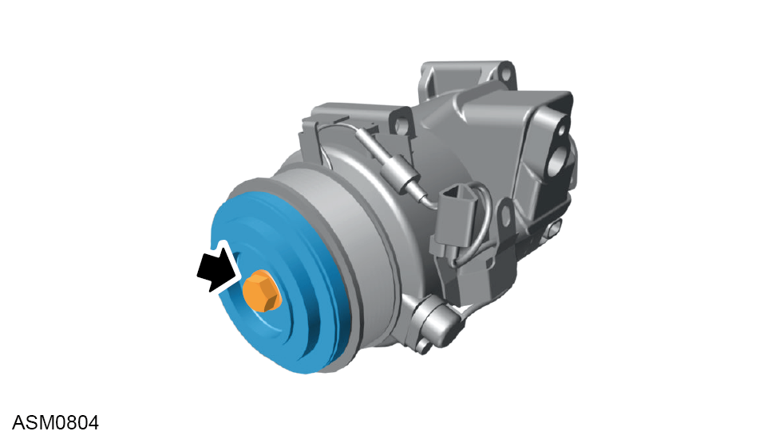

Air Conditioning Compressor - V6
Print
Operation Code: 40.23.01-02
Removal
- Recover Air Conditioning (AC) refrigerant. Refer to procedure.
- Release tension from auxiliary drive belt and remove from AC compressor pulley. Refer to procedure.
- Remove rear bulkhead access panel. Refer to procedure.
- Disconnect harness connectors (x2) from AC compressor.
- Disengage clips (x2) and move harness aside.
- Remove bolts securing AC pipes to AC compressor. Torque 8.5 Nm.
- Remove AC hoses from AC compressor.
NOTE: Plug the hoses to prevent dirt ingress.
- Remove M8 bolts (x4) securing AC Compressor to engine. Torque 25 Nm.
- Remove AC compressor.
NOTE: If fitting new compressor, retain old compressor to measure oil quantity measurement.
Do not carry out further disassembly if removing for access only.
- Place AC compressor in vice.

- Remove hub bolt. Torque 18 Nm.
- Remove hub.
NOTE: Collect and record number of clutch shims.
- Remove pulley circlip securing pulley to compressor.
- Remove pulley.
- Disconnect electrical connectors (x2) from AC compressor.
- Remove stator circlip.
- Remove stator assembly.
Installation
- Installation is the reverse of removal procedure except for the following:
- Drain and measure AC compressor oil quantity.
NOTE: If the existing compressor is to be refitted after normal refrigerant recovery has been performed, a quantity
of oil equivalent to that recovered must be added to that already held in the compressor.
NOTE: If the system has suffered a rapid discharge, most of the refrigerant oil will have been lost. Drain the remaining oil from the compressor by removing the drain plug and
rotating the clutch plate. Add 150 cm³ of new refrigerant oil to compressor before refitment.
If compressor refitment or renewal is required under these circumstances, then receiver drier
should also be renewed.
NOTE: New compressor fill quantity = measured quantity + 10cm³
- Install circlip to stator.
- Install circlip to pulley.
- Install clutch shims.
NOTE: Use at least the same amount of clutch shims as removed.
- Check clutch clearance.
NOTE: Add clutch shims as required if there is no clearance.
- Connect AC compressor to suitable 12V power source.
- Use Dial Test Indicator (DTI) to measure distance between hub and rotor while operating AC clutch.
NOTE: Distance should be between 0.26mm and 0.6mm between the clutch hub and the pulley.
NOTE: Add shims if outside of clearance.
- If AC compressor clutch fails to operate, check resistance at following terminals:
NOTE: If resistance is not as specified, on connectors replace the AC compressor and clutch assembly.
NOTE: If resistance is not as specified at ground connector, replace AC clutch.
- Renew O rings with new refrigerant oil.
- Recharge AC refrigerant. Refer to procedure.
- With AC compressor fitted, perform the following running in procedure:
 WARNING: The running in procedure described below must be performed so that refrigerant oil does not exit the compressor sump and flow directly into the air conditioning
hoses/pipes before first circulating around the compressor, this ensures the compressors internal components
are fully lubricated.
WARNING: The running in procedure described below must be performed so that refrigerant oil does not exit the compressor sump and flow directly into the air conditioning
hoses/pipes before first circulating around the compressor, this ensures the compressors internal components
are fully lubricated.
- Start engine.
- Turn on air conditioning to maximum cold setting.
- Allow engine to idle for 2 minutes while monitoring performance.
- Check for any leaks of AC refrigerant or oil.